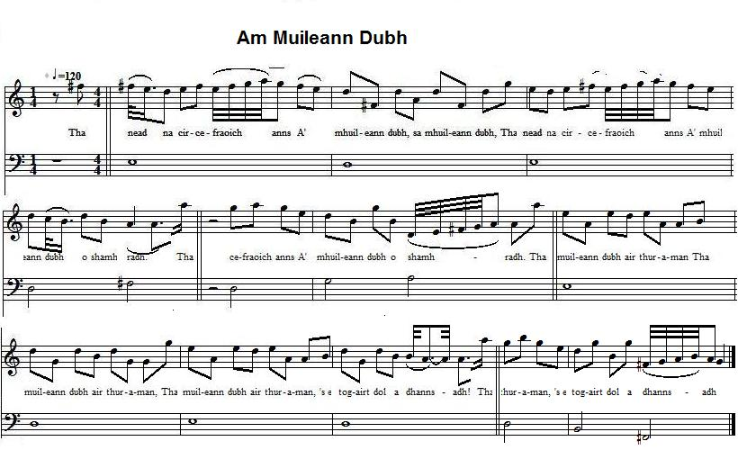

Am Muileann Dubh
The Black Mill - The "Mullin Du"
Le Moulin Noir

Tune - Mélodie (Athole Collection)
Variant 1 (Jock Tamson's Bairns)
Variant 2 (Nigel Gatherer)
Tunes sequenced by Ch.Souchon
|
To the tunes:
The melody exists in both air and reel versions. To the lyrics: This song belongs to the Piper of Dundee 's repertoire , which may hint at a widespread subversive interpretation of a neutral, if not nonsensical text. |
A propos des mélodies:
Cette mélodie existe sous deux formes: air chanté et reel. A propos des paroles: Ce chant fait partie du répertoire du Sonneur de Dundee ce qui porte à croire qu'on donnait généralement un sens subversif à ce texte apparemment neutre, sinon absurde. |

|
THE BLACK MILL
1. There is a heather hen's nest
Chorus:
2. Many a cow is calving
3. And goats and kids are plenty
4. There are cockles and mussels
5. No one refrains from snuffing
6. More things than you may dream of
Translated by Christian Souchon (c) 2015 |
AM MUILEANN DUBH
1. Tha nead na circe-fraoich anns
Sèist:
2. Tha an crodh a' breith nan laogh anns
3. Tha gobhair is crodh-laoigh anns
4. Tha coilleagan is maorach
5. An cuala thu gun robh snaoisean
6. Tha iomadh rud nach saoileadh tu
|
LE MOULIN NOIR
1. Niche un coq de bruyère
Refrain:
2. Plus d'une vache vèle:
3. Chèvre et chevreaux y gîtent
4. Coques et coquillages
5. Y a du tabac qu'on prise
6. Plus de choses qu'on pense
Traduit par Christian Souchon (c) 2015 |